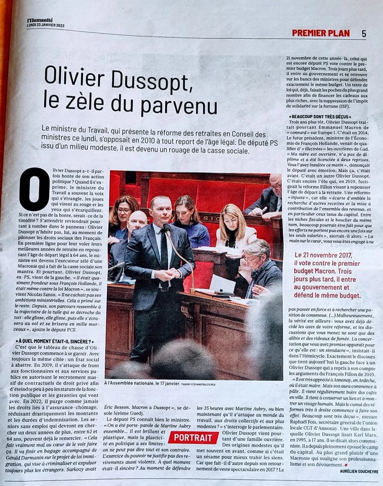

Publication d’archives
Portrait d'Olivier Dussopt, ministre du Travail, ou le zèle du parvenu.
Date indiquée par Facebook · 24 janvier 2023
Texte conservé avec la publication
Contexte du dossier
La première journée est annoncée pour le 19 janvier. L’unité syndicale et le rejet de la réforme sont présentés comme les moyens de faire reculer le gouvernement. La fédération conteste l’idée d’un système au bord de la faillite et défend le départ à 60 ans. Elle oppose au report vers 64 ans les déclarations de Macron en avril 2019, reproduites dans un partage mis à jour le 13 janvier, et le parcours de Dussopt, critique du report en 2010 selon L’Humanité. Dans un article de Cédric Clérin relayé le 16, profits du CAC 40, dividendes et aides publiques posent la question du financement. Le titre annonce 178 milliards de profits, le corps 172 : cette discordance interdit d’en faire un chiffre consolidé. Chassaigne interpelle parallèlement la Première ministre ; la légende du lien ne restitue pas son intervention.

Sources
Archive rouge · export Facebook · AR-0002-FB-01773
À lire aussi · Appel solennel à l'attention du Président de la République :